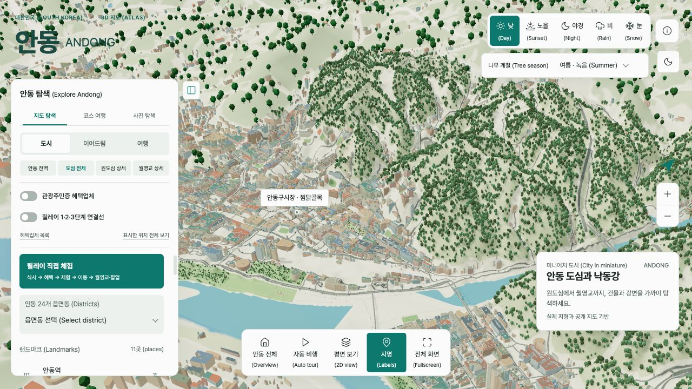
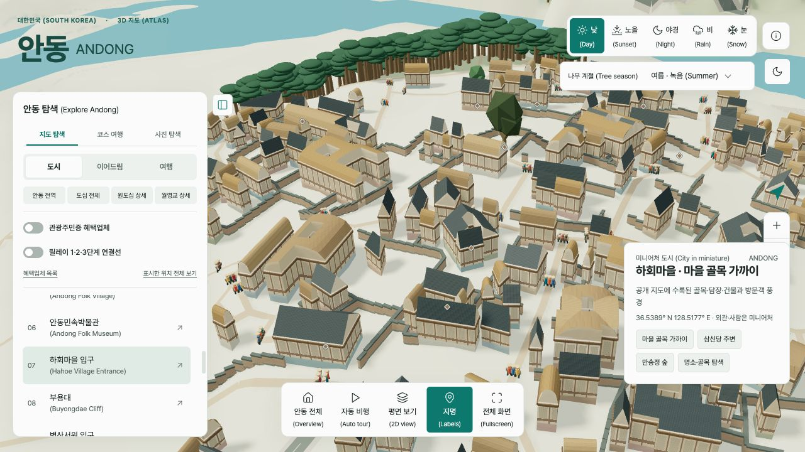
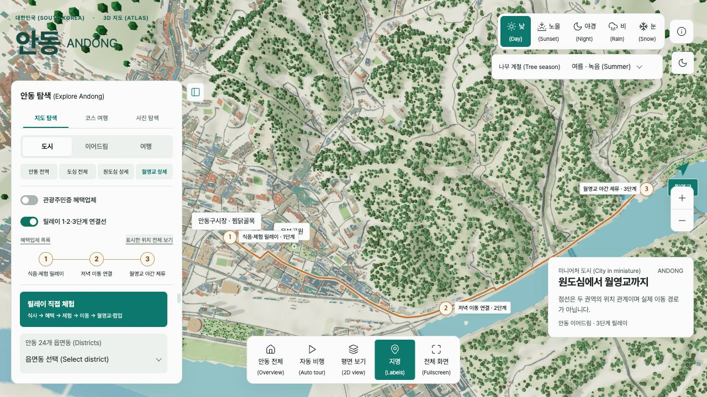
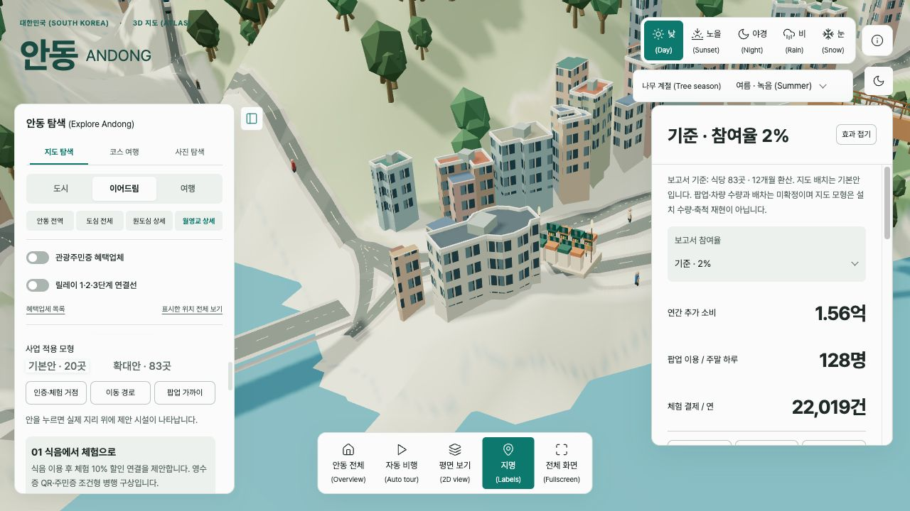
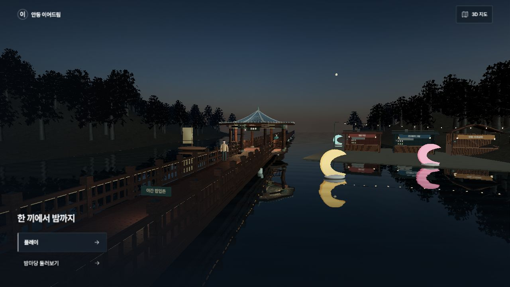
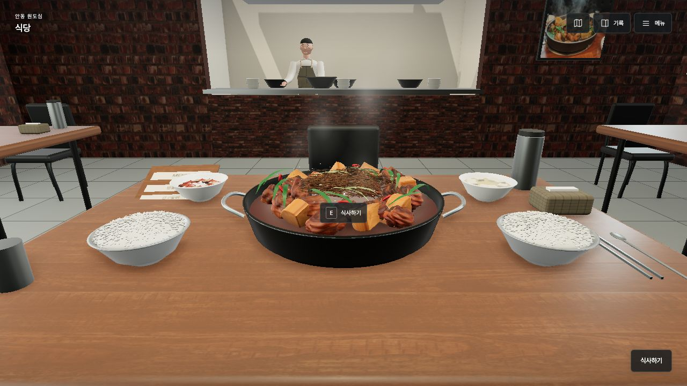
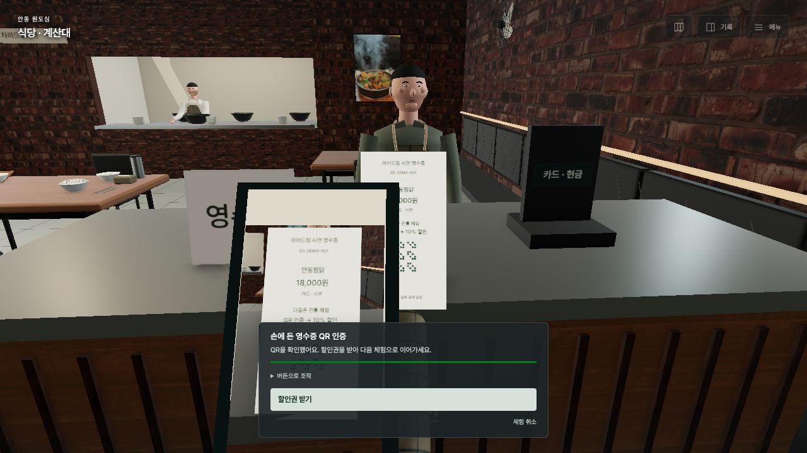
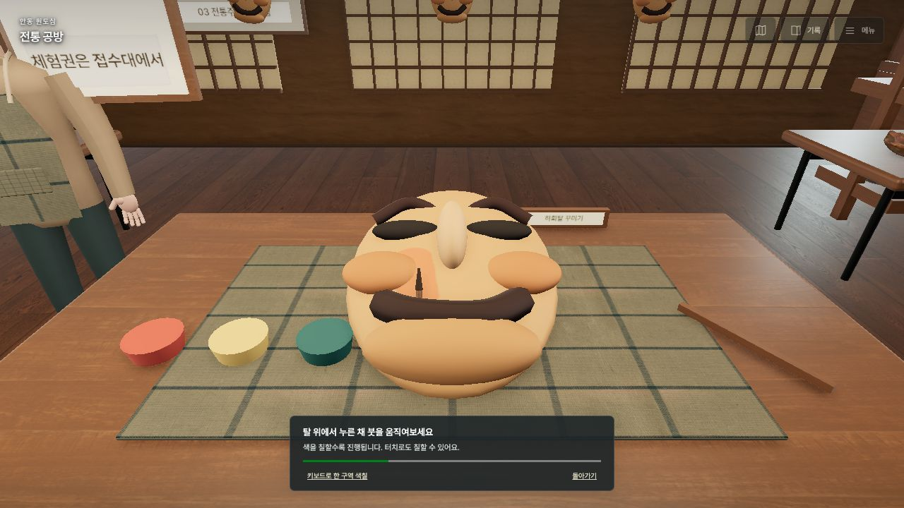
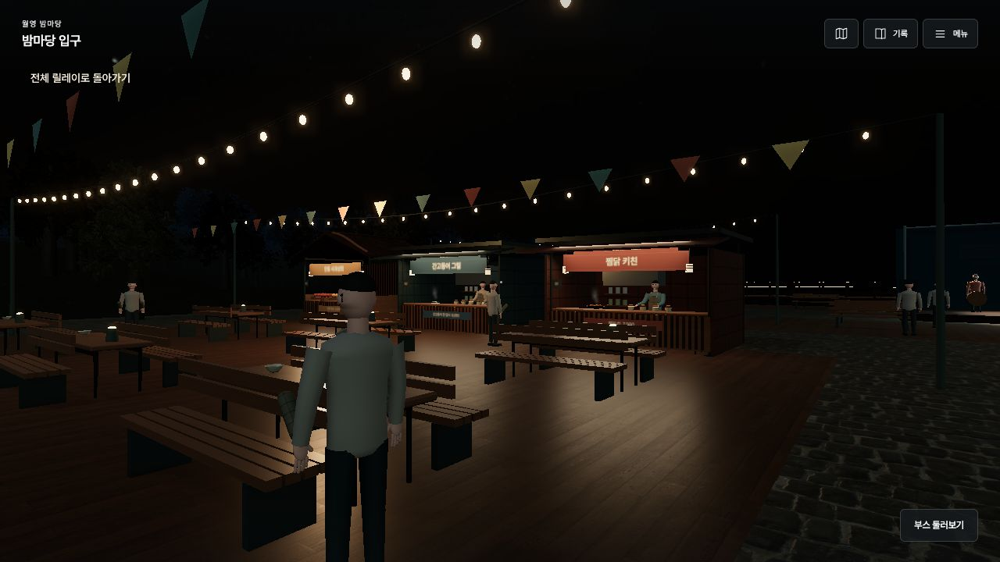
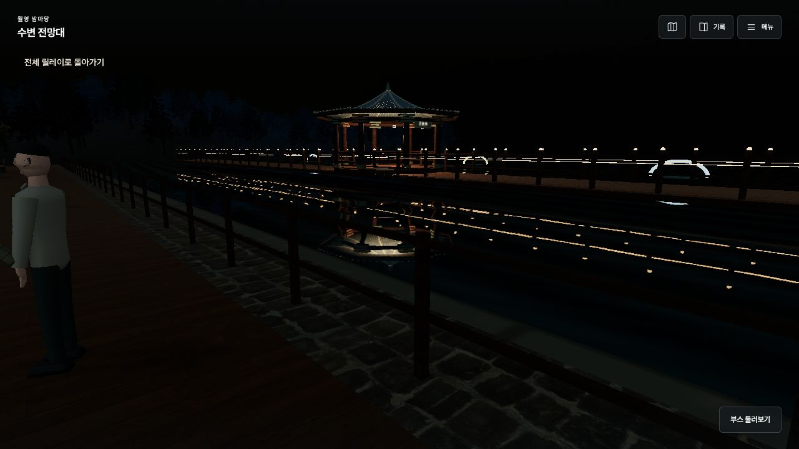

01 · 3D 지도·탐색
안동 도심과 낙동강의 3D 탐색
공개 지리자료를 바탕으로 안동의 지형·건물·강변을 입체적으로 표현하고, 주요 관광지의 공간적 관계를 탐색하도록 구성하였다.
PNG 저장 ↗ANDONG · WEB EXPERIENCE
3D로 공간을 살펴보고, 릴레이로 여행을 직접 경험하다.

01 · 3D 지도·탐색
공개 지리자료를 바탕으로 안동의 지형·건물·강변을 입체적으로 표현하고, 주요 관광지의 공간적 관계를 탐색하도록 구성하였다.
PNG 저장 ↗
02 · 3D 지도·탐색
관광지를 선택하면 골목·담장·건물 등을 미니어처 형태로 확대하여 살펴볼 수 있다. 하회마을의 주요 명소와 주변 공간을 함께 탐색하는 화면이다.
PNG 저장 ↗
03 · 3D 지도·탐색
식음·체험, 저녁 이동, 월영교 야간 체류의 세 단계를 지도 위에 연결하여 이어드림의 관광 동선을 시각화하였다. 연결선은 제안 동선이며 확정 교통 노선을 뜻하지 않는다.
PNG 저장 ↗
04 · 3D 지도·탐색
지도에 사업 제안 모형을 배치하고 참여율 가정에 따른 추가 소비·팝업 이용·체험 결제 추정치를 함께 제시하였다. 화면의 수치는 조건부 시뮬레이션 결과이다.
PNG 저장 ↗

06 · 릴레이 체험
관광객의 시점에서 식당에 들어가 메뉴를 고르고 3D 상차림을 체험하도록 구현하였다. 식사 이후 영수증과 체험 혜택으로 이어지는 출발점이다.
PNG 저장 ↗
07 · 릴레이 체험
영수증을 휴대폰 화면에 맞추는 조작을 통해 인증 과정을 시연하고, 전통 체험 할인권을 받는 연결 구조를 보여준다. 실제 영수증 인증이나 결제가 발생하는 기능은 아니다.
PNG 저장 ↗
08 · 릴레이 체험
전통 공방의 3D 작업대에서 하회탈에 직접 색을 입히도록 구성하였다. 식음 이용으로 시작된 여정을 관광객의 능동적인 문화 체험으로 확장한다.
PNG 저장 ↗
09 · 릴레이 체험
먹거리 부스와 공용 식탁, 조명과 방문객을 배치하여 야간에 머물며 소비하고 즐기는 팝업 공간을 시각화하였다. 실제 운영 중인 장터가 아닌 사업 제안 공간이다.
PNG 저장 ↗
10 · 릴레이 체험
수변 전망대에서 월영교의 정자·조명·수면 반사를 바라보는 1인칭 장면이다. 원도심에서 시작된 체험이 월영교의 야간 경관 감상으로 이어지는 흐름을 보여준다.
PNG 저장 ↗